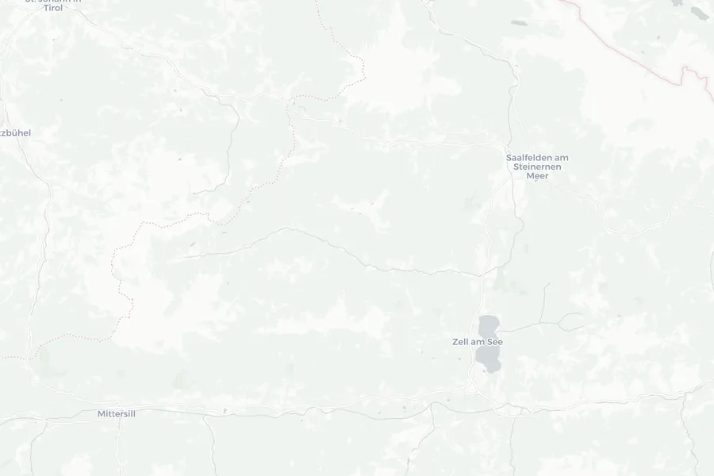

Finde deine nächste Tour
Schnell filtern, GPX herunterladen und auf dein GPS-Gerät oder in deine Navi-App laden.
Lade Touren...
0 Touren gefunden
Schnell filtern, GPX herunterladen und auf dein GPS-Gerät oder in deine Navi-App laden.
Die Touren werden als GPX heruntergeladen – ein Standardformat, das mit nahezu jeder Navi-App und jedem GPS-Bike-Computer funktioniert (z. B. Komoot, Garmin Connect, Wahoo, Sigma Ride).
Setze dein Quartier – die App zeigt dann pro Tour die Luftlinie und kann nach Nähe sortieren. Ziehe den Pin auf der Karte, nutze deinen Standort oder füge Koordinaten ein.

Quartier: Buchegg Resort
Kurzlinks (maps.app.goo.gl) gehen nicht – nutze eine vollständige Karten-URL, Koordinaten oder ziehe den Pin.